Proyecciones de Extremidad Superior
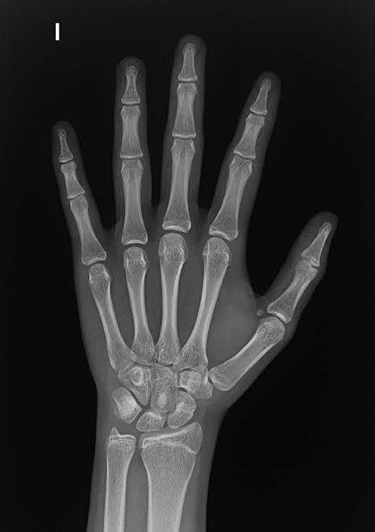
Mano PA
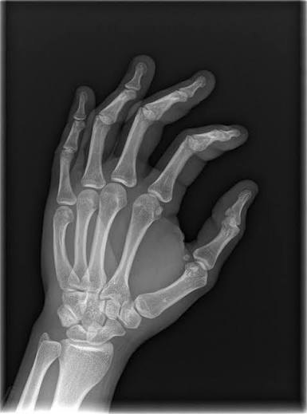
Mano Oblicua PA
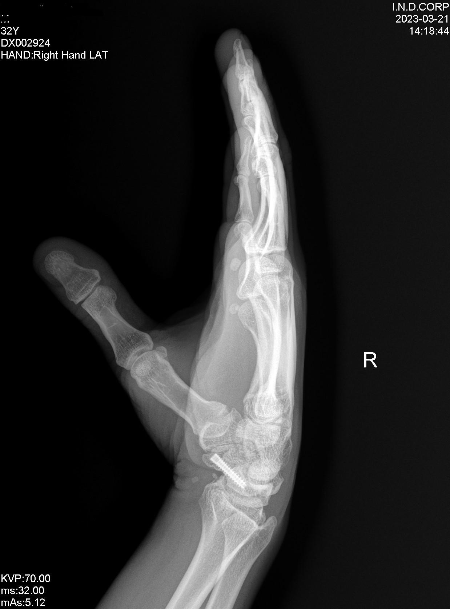
Mano Lateral
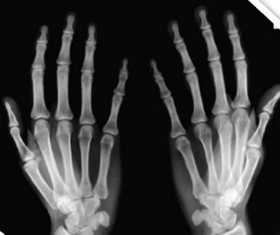
Mano - Método de Norgaard
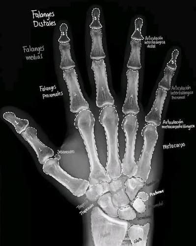
Dedos del 2° al 5° (PA, Lateral y Oblicuo)
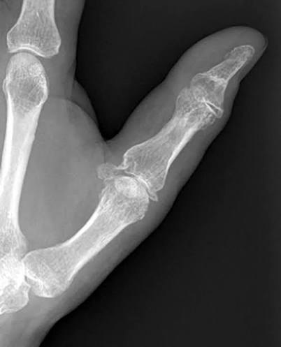
Pulgar / 1er Dedo (AP, Lateral y Oblicuo)
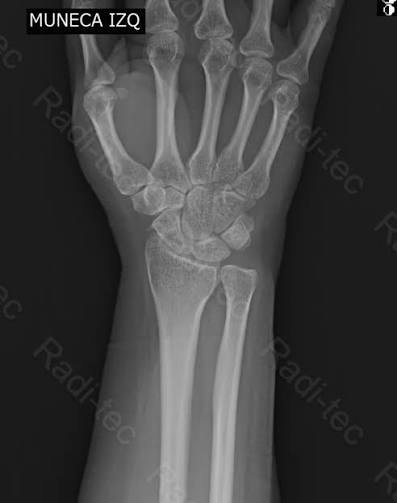
Muñeca PA
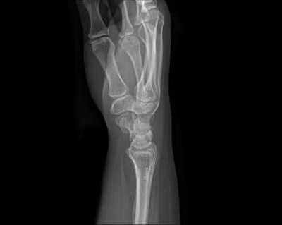
Muñeca Lateral
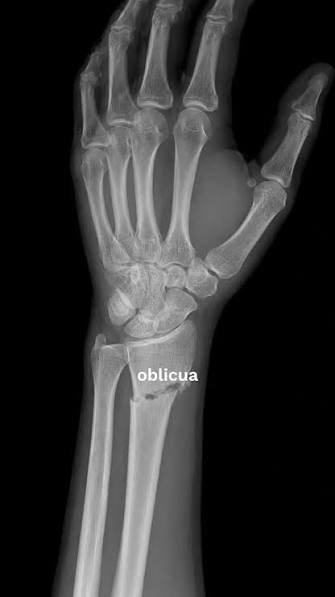
Muñeca Oblicua (Oblicua PA y Oblicua AP)
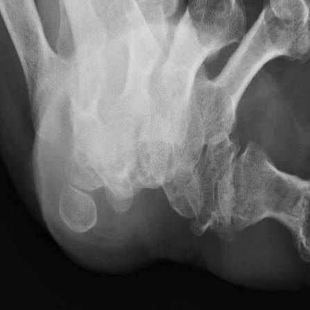
Túnel Carpiano (Inferosuperior Gaynor-Hart y Superoinferior)
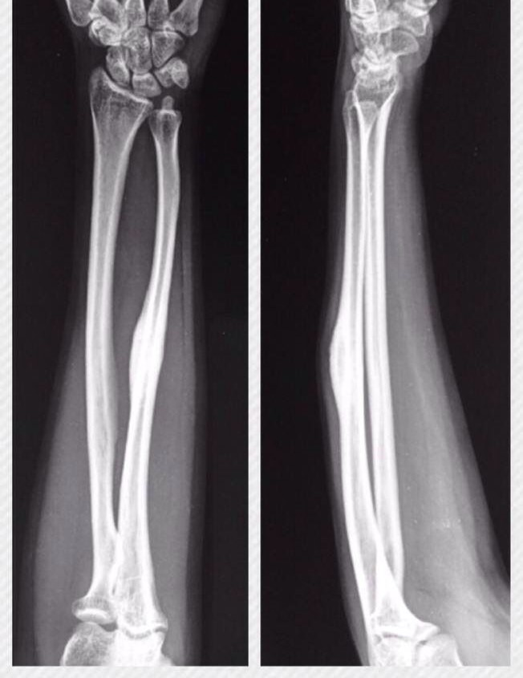
Antebrazo (AP y Lateral)
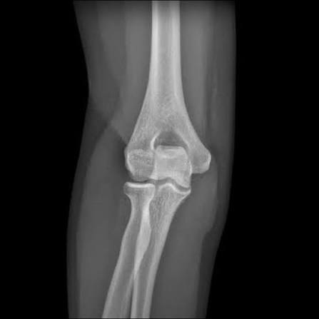
Codo AP
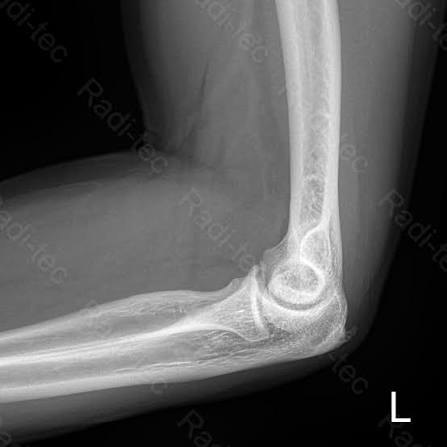
Codo Lateral
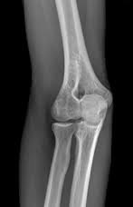
Codo Oblicuas (Medial Interna y Lateral Externa)
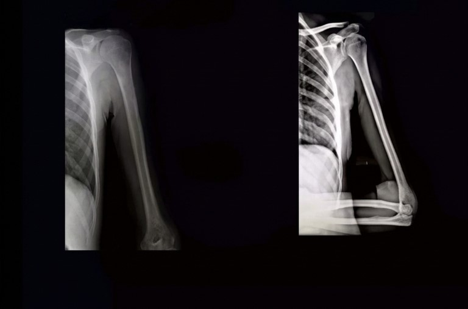
Húmero (AP y Lateral)
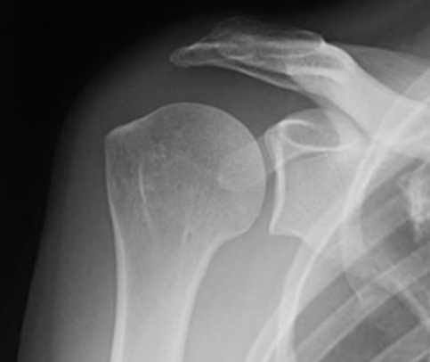
Hombro AP (Posición Neutra)
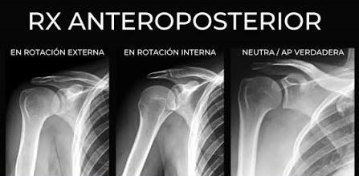
Hombro AP en Rotación Interna y Externa
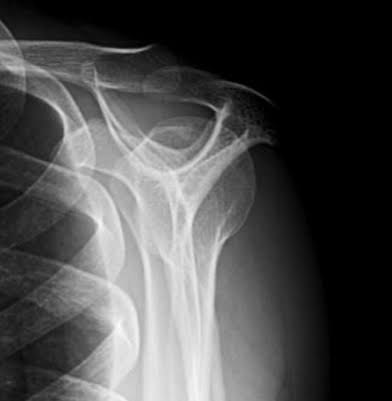
Hombro Outlet (Desfiladero Supraespinoso / Escápula en Y)
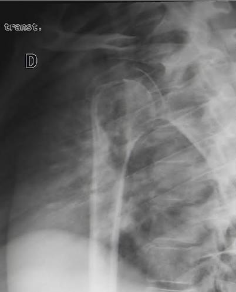
Hombro Transtorácico
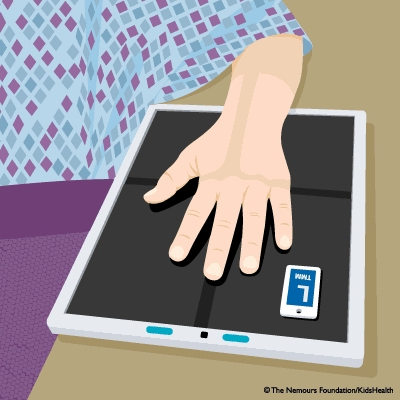
Posicionamiento PacienteMano PA
Anillos, pulseras, relojes, férulas metálicas.
Despejar muñeca y antebrazo distal (remangar prendas gruesas).
18 x 24 cm (Longitudinal) o 24 x 30 cm (Transversal dividido) o Flat Panel. Folio fine.
100 cm.
Sin Bucky (Directo sobre el receptor).
0° (Perpendicular y al centro del chasis).
Por el frente y por el lado a nivel de la cabeza del 3° metacarpiano o 3° articulación metacarpofalángica (MCF).
Paciente sentado al borde de la mesa de rayos, colocar la extremidad superior en el plano horizontal de la placa. Flexionar el codo en 90°. Mano en pronación con los dedos moderadamente separados. Alinear el eje longitudinal de la mano con el eje longitudinal del chasis.
45 - 52 kV
2 - 4 mAs
- Sin moverse.
- Protección Tiroidea.
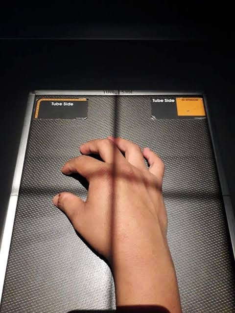
Posicionamiento PacienteMano Oblicua PA
Anillos, pulseras, relojes.
Despejar muñeca.
18 x 24 cm (Longitudinal) o 24 x 30 cm (Transversal) o Flat Panel. Folio fine.
100 cm.
Sin Bucky.
0° (Perpendicular y al centro del chasis).
Por el frente y por el lado a nivel de la cabeza del 3° metacarpiano o 3° articulación metacarpofalángica.
Paciente sentado al borde de la mesa de rayos, extremidad superior en el mismo plano del chasis y codo flectado en 90°. Desde mano en pronación, realizar una oblicuidad hacia lateral hasta formar un ángulo de 45° con respecto a la placa (apoyar dedos sobre cuña de espuma de 45° para evitar superposición de falanges).
45 - 52 kV
2 - 4 mAs
- Sin moverse.
- Protección Tiroidea.
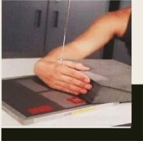
Posicionamiento PacienteMano Lateral
Anillos, pulseras, relojes.
Despejar muñeca.
18 x 24 cm (Longitudinal) o 24 x 30 cm (Transversal /2) o Flat Panel. Folio fine.
100 cm.
Sin Bucky.
0° (Perpendicular y al centro del chasis).
Por el frente y por el lado a nivel de la 2ª articulación metacarpofalángica.
Paciente sentado al borde de la mesa, extremidad superior en el mismo plano del chasis, codo flectado en 90°. Mano en lateral estricto (apoyando borde cubital), con los dedos superpuestos y el pulgar en línea con la mano o hacia distal de la misma (desproyectado).
50 - 55 kV
3 - 5 mAs
- Sin moverse.
- Protección Tiroidea.
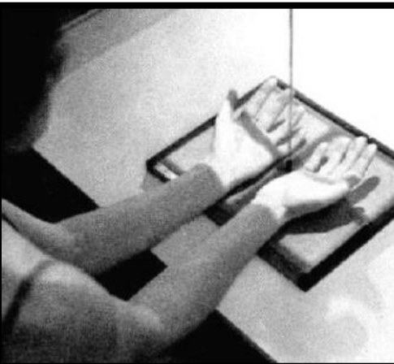
Posicionamiento PacienteMano - Método de Norgaard
Anillos, pulseras y relojes de ambas manos.
Despejar ambas muñecas.
24 x 30 cm (Transversal) o Flat Panel (se toman ambas manos simultáneamente). Folio fine.
100 cm.
Sin Bucky.
0° (Perpendicular y al centro del chasis).
Dirigido al punto medio entre las dos estructuras (ambas manos) a nivel de las articulaciones metacarpofalángicas.
Paciente sentado al borde de la mesa de rayos, colocar toda la extremidad superior extendida con ambas manos en supino (AP), rotadas medialmente en 45° elevando ambos pulgares (apoyando dorsos cubitales sobre cuñas de 45° y dedos semiflectados en posición de atrapar una pelota).
48 - 54 kV
3 - 5 mAs
- Sin moverse.
- Protección Tiroidea.
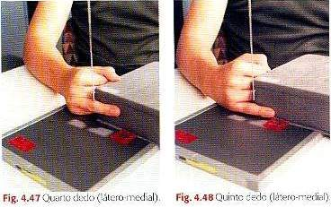
Posicionamiento PacienteDedos del 2° al 5°
Anillos, férulas metálicas.
Nada.
18 x 24 cm (Transversal dividido en /2 o /3) o Flat Panel. Folio fine.
100 cm.
Sin Bucky.
0° (Perpendicular y al centro del chasis).
Por el frente y por el lado en la articulación interfalángica proximal (IFP) del dedo afectado.
Paciente sentado al final de la mesa de rayos, antebrazo extendido: PA: Dedo a explorar apoyado plano en pronación sobre el chasis, demás dedos separados. Lateral: Dedo apoyado lateralmente (2° y 3° hacia radial; 4° y 5° hacia cubital), demás dedos flectados y separados. Oblicuo: Dedo apoyado oblicuamente en 45° sobre cuña de espuma, demás dedos separados.
42 - 48 kV
1.5 - 3 mAs
- Sin moverse.
- Protección Tiroidea.
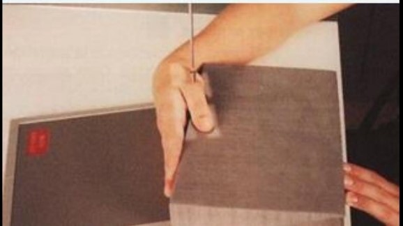
Posicionamiento PacientePulgar / 1er Dedo (AP, Lateral y Oblicuo)
Pulseras, relojes, férulas.
Nada.
18 x 24 cm (Transversal dividido en /2 o /3) o Flat Panel. Folio fine.
100 cm.
Sin Bucky.
0° (Perpendicular y al centro del chasis).
Por el frente y por el lado en la articulación interfalángica proximal / metacarpofalángica del pulgar.
Paciente sentado al final de la mesa con el antebrazo extendido: AP (Método de Roberts): Rotar internamente el brazo y la mano hasta apoyar la cara posterior/dorsal del pulgar sobre el receptor. Lateral: Codo flectado, mano en pronación arqueada hasta apoyar lateralmente el pulgar sobre el chasis. Oblicuo: Codo flectado, mano en pronación natural apoyando oblicuamente el pulgar en 45°.
44 - 50 kV
2 - 3.5 mAs
- Sin moverse.
- Protección Tiroidea.
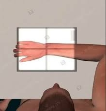
Posicionamiento PacienteMuñeca PA
Relojes, pulseras, anillos.
Despejar muñeca y antebrazo distal.
18 x 24 cm (Transversal /2) o Flat Panel. Folio fine.
100 cm.
Sin Bucky.
0° (Perpendicular al RI).
Al centro del área carpiana (punto medio entre apófisis estiloides radial y cubital).
Paciente sentado, extremidad superior en el mismo plano horizontal que la placa, codo flectado en 90°. Mano en pronación alineando el eje longitudinal de mano y antebrazo con el chasis. Arquear ligeramente la mano y flexionar los dedos para que el carpo quede en contacto íntimo con el receptor.
50 - 55 kV
3 - 5 mAs
- Sin moverse.
- Protección Tiroidea.
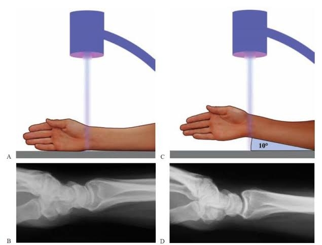
Posicionamiento PacienteMuñeca Lateral
Relojes, pulseras.
Despejar muñeca.
18 x 24 cm (Transversal /2) o Flat Panel. Folio fine.
100 cm.
Sin Bucky.
0° (Perpendicular al RI).
Al centro del área del carpo (sobre la tabaquera anatómica / base del 1er metacarpiano).
Toda la extremidad superior en el mismo plano horizontal que la placa, codo flectado en 90°. Mano en posición lateral estricta (con el pulgar hacia arriba) apoyando borde cubital, alineando eje longitudinal de mano y antebrazo con el chasis.
55 - 60 kV
4 - 6 mAs
- Sin moverse.
- Protección Tiroidea.
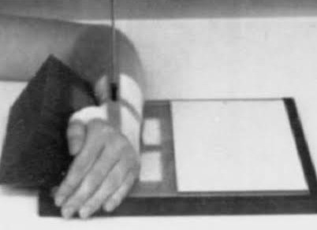
Posicionamiento PacienteMuñeca Oblicua PA
Relojes, pulseras.
Despejar muñeca.
18 x 24 cm (Transversal /2). Folio fine.
100 cm.
Sin Bucky.
0° (Perpendicular al área carpiana).
Al centro del área del carpo.
Extremidad superior en el plano horizontal de la mesa, codo flectado en 90°: Oblicua PA (Interna): A partir de la posición lateral, rotar la muñeca medialmente (hacia pronación) hasta formar un ángulo de 45° con la placa (despeja escafoides y trapecio). Oblicua AP (Externa): A partir de la posición lateral, rotar la muñeca lateralmente (hacia supinación) hasta formar un ángulo de 45° con la placa (despeja pisiforme y piramidal).
52 - 58 kV
3 - 5 mAs
- Sin moverse.
- Protección Tiroidea.
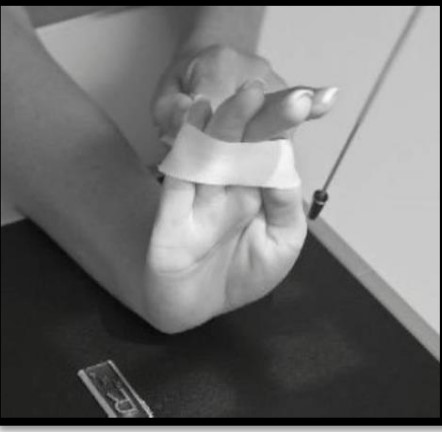
Posicionamiento PacienteTúnel Carpiano (Inferosuperior Gaynor-Hart y Superoinferior)
Relojes, pulseras, anillos.
Despejar muñeca.
18 x 24 cm. Folio fine.
100 cm.
Sin Bucky.
Inferosuperior (Gaynor-Hart): Angulado en 25° a 30° hacia caudal a lo largo del eje de la mano. Superoinferior: 0° Perpendicular al centro del chasis.
Inferosuperior: Por la cara palmar a 2,5 cm distal a la base del 4° metacarpiano (centro del túnel carpiano). Superoinferior: Tangencial al canal carpiano.
Método de Gaynor-Hart (Inferosuperior): Codo extendido, mano en pronación, muñeca en hiperextensión (dorsiflexión) sujetando los dedos con una cinta o con la mano opuesta para mantener el eje de la mano perpendicular al chasis; rotar discretamente hacia el lado radial para separar pisiforme y gancho del ganchoso. Proyección Superoinferior: Paciente de pie junto a la mesa inclinado hacia delante, cara palmar sobre el chasis con muñeca en dorsiflexión extrema.
55 - 62 kV
4 - 7 mAs
- Sin moverse.
- Protección Tiroidea.
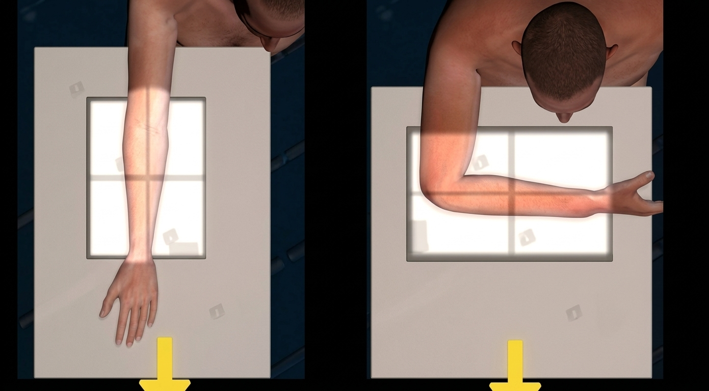
Posicionamiento PacienteAntebrazo (AP y Lateral)
Relojes, pulseras, anillos, férulas metálicas.
Despejar completamente desde codo hasta muñeca.
30 x 40 cm (Longitudinal dividido /2) o 35 x 43 cm (debe incluir articulación de codo y muñeca). Folio regular/fine.
100 cm.
Sin Bucky.
0° (Perpendicular al punto medio del antebrazo).
Al punto medio de la diáfisis del antebrazo (incluyendo ambas articulaciones: radiocarpiana y codo).
Extremidad superior en el mismo plano horizontal que la placa, eje longitudinal alineado con el chasis: Antebrazo AP: Codo extendido, mano en posición supina (evita cruce de radio sobre cúbito). Inclinar lateralmente al paciente para que los epicóndilos del húmero queden paralelos a la placa. Antebrazo Lateral: Codo flectado en 90°, mano en posición lateral estricta (pulgar hacia arriba) apoyando borde cubital.
55 - 62 kV
4 - 6 mAs
- Sin moverse.
- Protección Tiroidea.
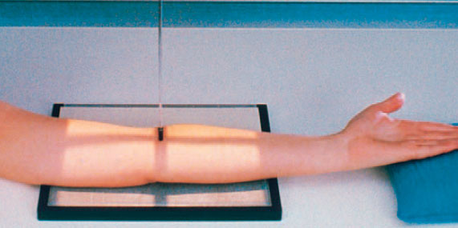
Posicionamiento PacienteCodo AP
Relojes, pulseras, mangas con botones o cierres.
Despejar brazo y antebrazo.
18 x 24 cm o 24 x 30 cm (Transversal /2). Folio fine.
100 cm.
Sin Bucky.
0° (Perpendicular al centro de la articulación del codo).
Al centro de la articulación del codo (punto medio entre ambos epicóndilos humerales).
Paciente sentado, extremidad superior en el mismo plano que la placa. Codo totalmente extendido y mano en posición supina. Alinear eje longitudinal del brazo y antebrazo con el chasis. Inclinar lateralmente al paciente para lograr que los epicóndilos del húmero queden paralelos a la placa.
55 - 62 kV
4 - 6 mAs
- Sin moverse.
- Protección Tiroidea.
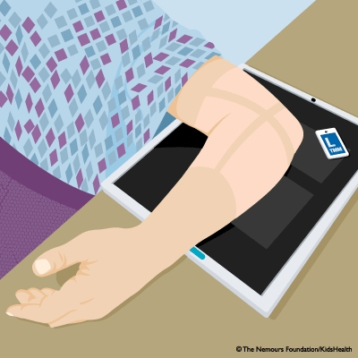
Posicionamiento PacienteCodo Lateral
Relojes, pulseras, elementos metálicos en manga.
Despejar brazo y antebrazo.
18 x 24 cm o 24 x 30 cm (Transversal /2). Folio fine.
100 cm.
Sin Bucky.
0° (Perpendicular al centro de la articulación del codo).
Sobre el epicóndilo lateral / centro de la articulación del codo.
Extremidad superior en el mismo plano horizontal del chasis (descender hombro al nivel de la mesa). Codo en flexión estricta de 90°, eje longitudinal del chasis alineado con brazo/antebrazo, epicóndilos humerales perpendiculares al plano de la placa y mano en posición lateral (pulgar hacia arriba).
55 - 62 kV
4 - 6 mAs
- Sin moverse.
- Protección Tiroidea.
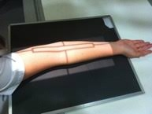
Posicionamiento PacienteCodo Oblicuas
Relojes, pulseras.
Despejar brazo y antebrazo.
18 x 24 cm o 24 x 30 cm. Folio fine.
100 cm.
Sin Bucky.
0° (Perpendicular al centro de la articulación del codo).
Al centro de la articulación del codo.
Extremidad superior en el mismo plano horizontal de la placa, codo extendido: Oblicua Medial (Interna): Mano en pronación, extremidad superior rotada internamente de modo que el codo quede en posición oblicua medial interna de 45° (despeja apófisis coronoides y tróclea). Oblicua Lateral (Externa): Mano en supinación, rotar externamente la extremidad superior colocando la articulación del codo en oblicua lateral externa de 45° (despeja cabeza y cuello del radio libres de superposición).
55 - 62 kV
4 - 6 mAs
- Sin moverse.
- Protección Tiroidea.
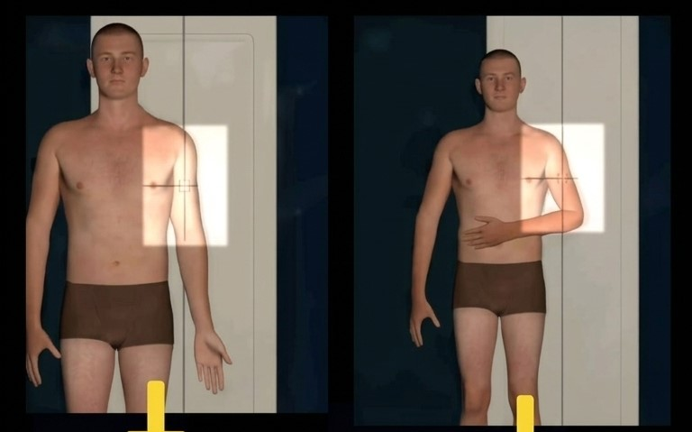
Posicionamiento PacienteHúmero (AP y Lateral)
Cadenas, relojes, pulseras, broches o cierres en hombro/brazo.
Desnudar brazo y hombro (bata de examen).
30 x 40 cm o 35 x 43 cm (Longitudinal, debe incluir articulación de hombro y codo). Folio regular.
100 cm.
Sí (Estativo mural en bipedestación o camilla en decúbito dorsal).
0° (Perpendicular al centro de la diáfisis del húmero).
Al punto medio de la diáfisis humeral.
En bipedestación o decúbito dorsal, brazo centrado al chasis y ligeramente abducido para evitar superposiciones con el tórax: Húmero AP: Mano en posición supina y articulación del codo extendida tanto como sea posible. Húmero Lateral: Flexionar el codo 90° y colocar la mano sobre el abdomen.
65 - 72 kV
8 - 12 mAs
- Sin moverse.
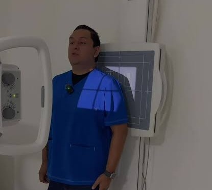
Posicionamiento PacienteHombro AP (Posición Neutra)
Cadenas, collares, sostén con broches o tirantes metálicos.
Desnudar región escapular y hombro (usar bata de examen).
18 x 24 cm (Longitudinal). Folio regular.
100 cm.
Sí (Estativo mural o camilla).
Angulado en 15° hacia caudal.
Borde interno de la cabeza humeral (apófisis coracoides) por el frente y por el lado al centro de la articulación glenohumeral.
Paciente en bipedestación o decúbito, girado en 10° a 45° apoyando el lado a examinar (oblicua posterior para despejar cavidad glenoidea), brazo extendido y mano en posición neutra apoyada en el muslo.
65 - 75 kV
10 - 16 mAs
- En apnea respiratoria.
- Sin moverse.
Hombro AP en Rotación Interna y Externa
Cadenas, collares, sostén con tirantes/broches metálicos.
Bata de examen.
18 x 24 cm (Longitudinal). Folio regular.
100 cm.
Sí (Estativo mural o camilla).
Angulado en 15° hacia caudal.
Borde interno de la cabeza humeral por el frente y por el lado el centro de la articulación.
Girado en 10° a 45° apoyando el lado a examinar: Rotación Interna: Girar la mano y el brazo hacia interno completamente (dorso de la mano apoyado en el muslo; proyecta de perfil el troquín/tuberosidad menor). Rotación Externa: Girar la mano y el brazo hacia externo completamente (palma hacia adelante/afuera; proyecta de perfil el troquíter/tuberosidad mayor y espacio subacromial).
65 - 75 kV
10 - 16 mAs
- En apnea respiratoria.
- Sin moverse.
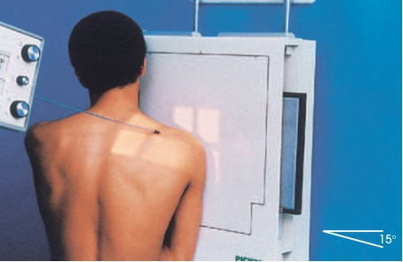
Posicionamiento PacienteHombro Outlet (Desfiladero Supraespinoso / Escápula en Y)
Cadenas, collares, sostén.
Bata de examen.
18 x 24 cm (Longitudinal). Folio regular.
100 cm.
Sí (Estativo mural).
Angulado de 15° a 40° hacia caudal (tangencial al espacio subacromial / espina de la escápula).
La articulación del hombro al centro de la placa (borde superior del chasis a 5 cm sobre el hombro).
En bipedestación en oblicua anterior con el hombro de interés apoyado sobre el estativo y el lado contrario alejado en 45° (cuerpo de la escápula perpendicular al RI). El brazo del lado afectado queda relajado en posición neutra o codo en 90°.
70 - 78 kV
12 - 20 mAs
- En apnea respiratoria.
- Sin moverse.
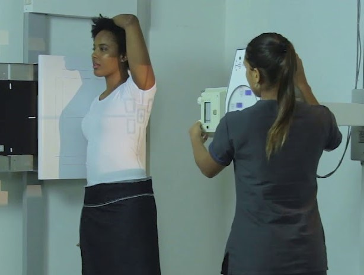
Posicionamiento PacienteHombro Transtorácico (Método de Lawrence)
Cadenas, sostén con barbas/broches metálicos, botones torácicos.
Bata de examen.
24 x 30 cm o 30 x 40 cm (Longitudinal). Folio regular.
100 cm.
Sí (Estativo mural).
0° Horizontal (o 10°-15° cefálico si el paciente no logra elevar bien el brazo opuesto).
Por el frente el eje medio de la estructura (húmero proximal / cuello quirúrgico) y por el lado a nivel de la articulación glenohumeral, atravesando el tórax.
En bipedestación en lateral estricto, apoyando el hombro lesionado en el estativo. Elevar el brazo sano sobre la cabeza apoyando el antebrazo en ella para evitar su superposición sobre el hombro afectado.
75 - 85 kV
30 - 50 mAs
- En apnea inspiratoria.
- Sin moverse.